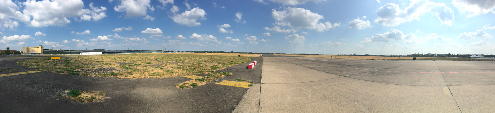
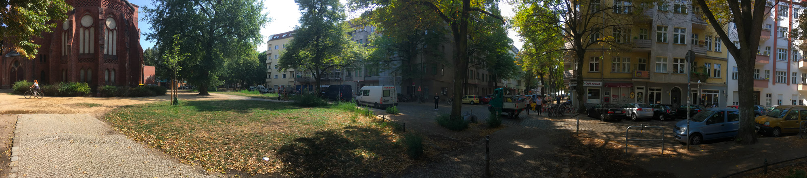
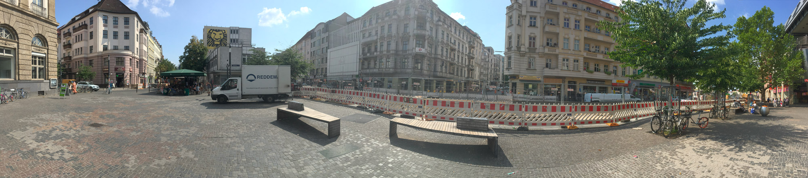
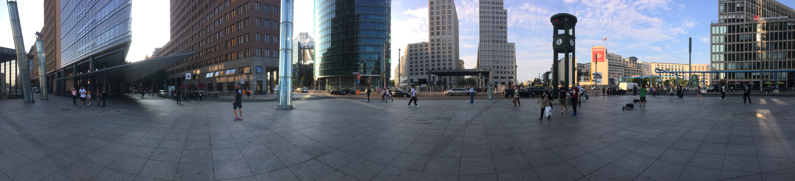
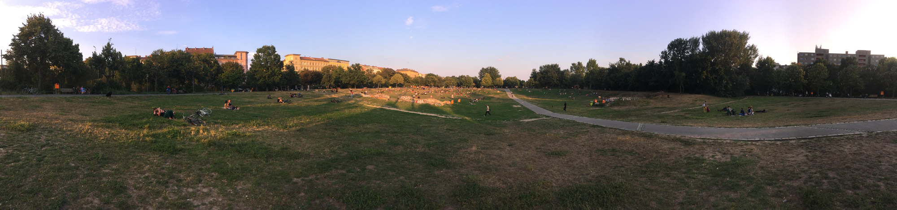
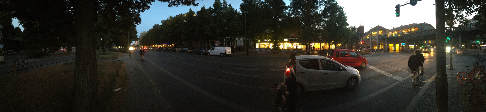
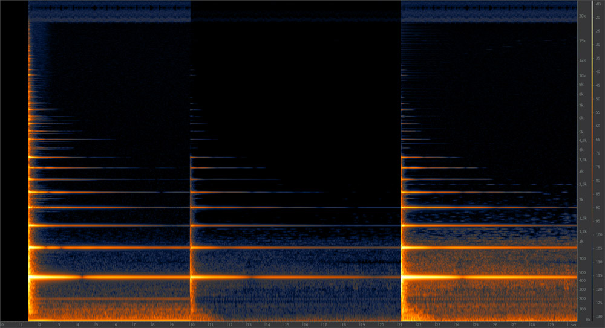

Une évolution de la perception auditive
Matisse Vrignaud, 2018
Enregistrements & références
Panoramas
P1 Tempelhof 13:20

P2 Herrfurthplatz 13:45

P3 Karl Marx Straße 14:05

P4 Alexanderplatz 17:15

P5 Potsdamer Platz 18:00

P6 Görlitzer Park 18:50

P7 KOTBUSSER TOR 20:05

Références audio
Proximité et distance : amplification d'une note de piano

D.A.F, Sato-Sato (1980)
Références vidéo
Music Land (1935)
Berlin, symphonie d’une grande ville (1927)